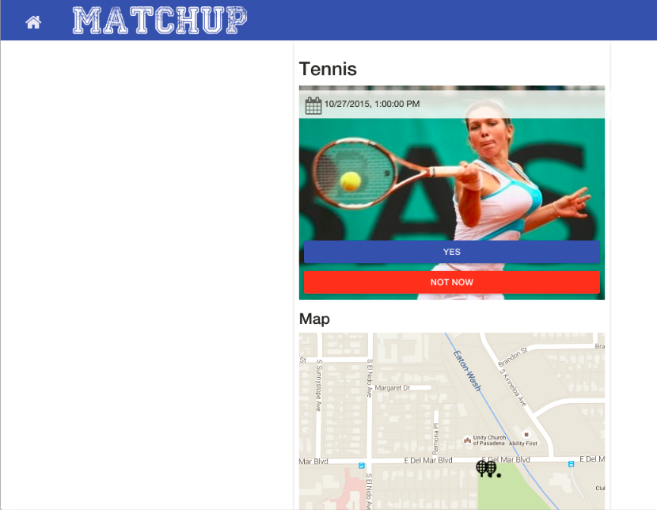
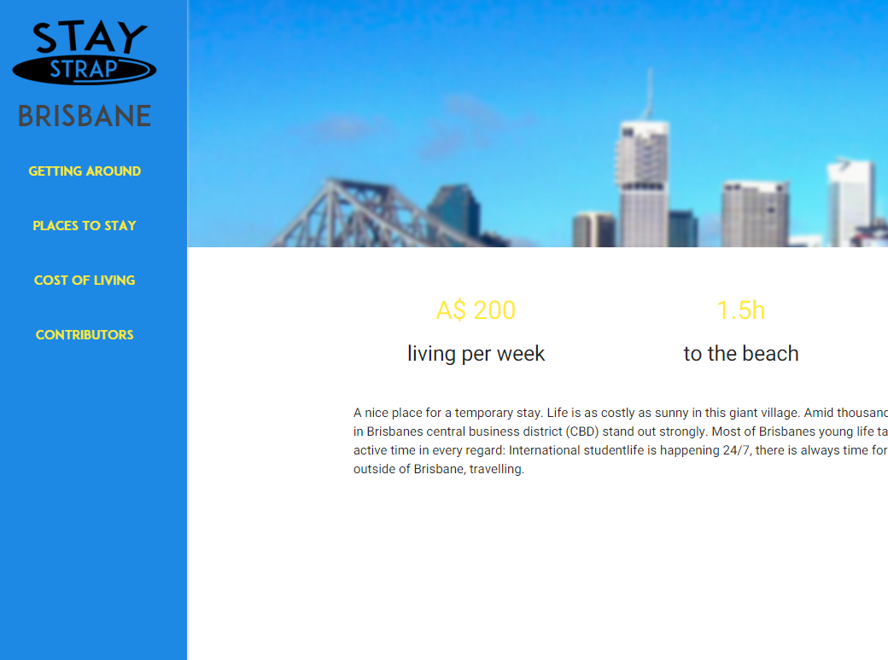

Welcome to my GitHub Page! Here you can checkout different projects I contributed to. They are listed in the section below. If you click on them you will be forwarded to the project's web page and can learn more about it or even get involved yourself.
-

MatchUP is a mobile web app which seeks to help you with finding new people who you can do your favorite sports with. So far we only implemented a rudimental protoype, but there will be more coming more soon. Click to learn more...
-

StayStrap is a platform for people who are going abroad. There you can find useful information like living cost or distance to important landmarks for specific places. Right now we only feature a handful of cities, but we are working on extending our catalogue. Click here to get involved or learn more...
-
BlogIntelligence is a platform which enables you to understand connections between different blogs and discover blog entries for specific topics. It can visualize various different aspects of the social media world. Check it out!
-
-

Noise To Opportunity (N2O) is a platform directed at professionals who want to react fast on customer needs, which are expressed online. Therefore the power of various social networks is used to enhance customer understanding. Click here to check it out...
> -
This video demonstrates the use case of n2o among other things. The Hasso Plattner Institute Potsdam published a press release about the project which can be found here. Also DeutschesBusiness.tv released an article on the project you can read here.
>
-
I am a software engineer from Germany. Check out my social media channels: